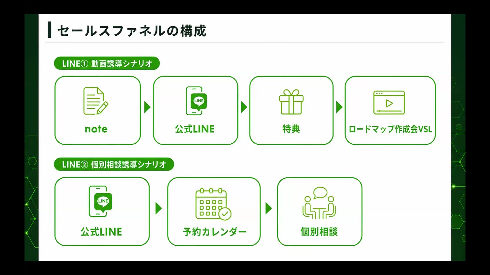

📌 このページの前提と対象者
このページは基礎編のゴール（LINE登録で挨拶メッセージ＋特典が自動で届く）を達成した方向けです。まだの方は、先に基礎編を終わらせてください。
発展編の対象者はこんな方です。
進む順は【中級】→【上級】→【収益化】→【改善】です。全部やる必要はありません。STEP1だけでも、特典の受け取り率と反応は大きく変わります。そして、大きく成果を出したい方は【収益化】（STEP4〜5）まで進んでください——個別相談の予約が自動で入る状態までがワンセットです。
文章づくりのAIは、どれを使ってもOKです。講座動画「AIライティングのやり方」はClaudeのプロジェクト機能で作っていますが、入っているノウハウはファネルキットと同じもの。Claude Codeでも、Claudeでも、普段使っているAIにキットを入れてもOK。おすすめは、Day1の分身AIとつなげてClaude Codeで全部管理するやり方です（知識が溜まって、使うほど充実します）。
🔧 先にこれだけ — 「アクション」が分かれば全部同じ
基礎編のSTEP6で、「友だち追加されたら、このテンプレートを送る」という設定をしました。エルメッセージではこれをアクションと呼びます。
実は、エルメの機能はほぼ全部これです。「◯◯したら△△する」の組み合わせ。
| ◯◯したら | △△する | 出てくる場所 |
|---|---|---|
| 友だち追加されたら | 挨拶メッセージを送る | 基礎編STEP6（済み） |
| 特典URLがタップされたら | タグを付ける・ステップ配信を止める | このページのSTEP1 |
| このQRコードから登録されたら | 経路のタグを付けて専用の特典を送る | STEP2 |
| シナリオの目的を達成したら | 次のシナリオを自動で始める | STEP4 |
| 個別相談が予約されたら | リマインドを送る・配信を止める | STEP5 |
この1パターンさえ頭に入れば、発展編は「どこに・どのアクションを付けるか」を選んでいくだけです。
タグ・回答フォーム・テンプレート・ステップ配信・流入経路の具体的な操作方法は、セールスファネル講座の実装ガイドで画面つきで解説されています。このページでは「何を・どの順で作るか」に絞り、細かい操作はそちらに任せます。
STEP 1【中級】挨拶メッセージの後に、自動でステップ配信を流す
このステップが終わると、登録した人に「1通目（登録直後）→ 2通目（12時間後）→ 3通目（23時間後）」が自動で流れ、特典を受け取っていない人にだけリマインドが届くようになります。
1. 2通目・3通目の文章を作る
特典配布シナリオの2通目と3通目を作ってください。 ・2通目: 登録から12時間後。まだ特典を受け取っていない人向けに、特典の中身をチラ見せして気にさせる内容 ・3通目: 登録から23時間後。「受け取りは残り1時間で終了」と伝える終了案内 ・受け取り期限は24時間限定という前提です
2. テンプレートを2つ追加する
基礎編STEP6と同じ手順で、「2通目」「3通目」のテンプレートを作ります（新規作成 → 本文貼り付け → 保存）。
3. ステップ配信を組む
左メニュー「ステップ配信」→「新規作成」。名前は「特典配布シナリオ」。「配信タイミングを追加」で3つ設定します。
- 1通目: ステップ開始直後 → テンプレート「登録直後メッセージ」
- 2通目: 経過時間・12時間後 → テンプレート「2通目」
- 3通目: 経過時間・23時間後 → テンプレート「3通目」
📷 この手順のスクリーンショットは準備中です（追って追加します）
4. 挨拶メッセージを「ステップ開始」に差し替える
「あいさつメッセージ」→「新規友だち用」→「アクション追加・編集」を開き、基礎編で設定したテンプレート単発を削除 → 左の「ステップ開始」から「特典配布シナリオ」を選んで保存。これで登録と同時に3通が自動で流れます。
5. 受け取った人には送らないようにする
1通目の特典URLに「URLタップ時のアクション」を設定します（テンプレート編集画面のURL設定から）。
- タグ「特典受け取り済み」を付ける（タグは新規追加でOK）
- ステップ配信「特典配布シナリオ」を停止する
これで、受け取り済みの人に2通目・3通目が届いてしつこくなる事故を防げます。
📷 この手順のスクリーンショットは準備中です（追って追加します）
配信時間の目安: 夜18〜21時がいちばん読まれます。主婦層向けなら昼もあり。「何時間後」でなく日時で送りたいときは、配信タイミングで「日時指定」を選べます。
ステップ配信は「作っただけ」では動きません。手順4の「挨拶メッセージをステップ開始に差し替える」までがワンセットです（基礎編STEP6と同じ落とし穴です）。
つまずいたら: いまの画面のスクショと、見ているページのURLをAIに送って聞く（基礎編「大原則」の聞き方例）
STEP 2【上級】流入経路を作る — どこから登録されたか全部わかる
このステップが終わると、「YouTubeのどの動画から」「Instagramのプロフィールから」など、登録の入口ごとに人数を計測できるようになります。さらに、入口ごとに送る特典やシナリオを変えることもできます。
やることの流れ
講義では実際の運用例として、YouTubeの動画1本ごとに専用リンクを分けて、「どの動画が何人LINEに連れてきたか」を全部数字で見られる状態が紹介されました。
📷 この手順のスクリーンショットは準備中です（追って追加します）
コツ: タグは「アクションごとに必ず作る」。経路・特典受け取り・動画視聴など、行動のたびにタグが付くようにしておくと、あとから「この条件の人にだけ配信」が全部できるようになります（計測は仕組みで一番の財産です）。
つまずいたら: いまの画面のスクショと、見ているページのURLをAIに送って聞く（基礎編「大原則」の聞き方例）
STEP 3【上級】リッチメニューを設定する
リッチメニューは、LINEのトーク画面の下に常に表示されるボタンです。ここに主要な導線をまとめると、登録者が迷わず次の行動に進めます。
操作はエルメ公式マニュアルが分かりやすいので、設定はそちらで。ここでは合宿の質疑で出た「作り方の判断基準」を残しておきます。
やってはいけないこと:
- YouTube・noteへ「戻る」ボタンを置く（LINEはゴール地点。集客元へ逆流させる意味がない）
- チャットボットを入れる（大企業向けの機能。個人の発信では不要）
つまずいたら: いまの画面のスクショと、見ているページのURLをAIに送って聞く（基礎編「大原則」の聞き方例）
STEP 4【収益化】複数のシナリオを作って、自動でつなげる
ここが発展編の本丸です。このステップが終わると、「特典を受け取った人に、個別相談への誘導が自動で始まる」——つまり商品につながる流れができます。
考え方: 1シナリオ＝1目的
シナリオ（ステップ配信）は、1つにつき目的を1つだけ持たせます。
そして「目的を達成した人を、次のシナリオへ自動で移す」。これをアクションでつなぎます。占い鑑定・カウンセリングへの誘導もまったく同じ流れです。

1. 個別相談の「名前」を決める
「個別相談」のままでは申し込まれにくいので、参加したくなる名前を付けます。
私のジャンルに合う「個別相談の名前」の案を10個出してください。 例: ロードマップ作成会／無料カウンセリング／適性診断セッション のような、参加のハードルが下がる名前でお願いします。
2. 誘導シナリオの構成と本文を作る
特典を受け取った人を「◯◯」（個別相談）に誘導するステップ配信を作ってください。 ・まず3日間の構成案を出してください（登録直後は反応が高いので初日に厚めに、以降は1日1通・夜の配信を基本に） ・構成が決まったら、各配信文の本文を作成してください
構成 → 本文の順で出てきます。内容を確認して、テンプレート登録 → ステップ配信に組みます（操作はSTEP1と同じ）。
3. 特典受け取りをきっかけに、自動で始める
特典URL（またはバナー）のタップ時アクションに、「ステップ開始: 個別相談誘導シナリオ」を追加します。これで「特典を受け取った人に、次の誘導が自動で始まる」がつながりました。
📷 この手順のスクリーンショットは準備中です（追って追加します）
説明動画（VSL）を挟みたい場合: エルメの「回答フォーム」に動画を貼ったページを作り、そのページを開いた人に「視聴済み」のアクションを付けるやり方が紹介されました。動画を見た人だけを個別相談誘導へ進める、という分岐ができます（まずは動画なしで個別相談に直接誘導でもOKです）。
つまずいたら: いまの画面のスクショと、見ているページのURLをAIに送って聞く（基礎編「大原則」の聞き方例）
STEP 5【収益化】個別相談の予約を自動化する（カレンダー予約）
個別相談を実際に受けるなら、ここまでがセットです。このステップが終わると、予約の受付・確認・リマインド・Zoomリンクの送付が全部自動になります。
やることの流れ
📷 この手順のスクリーンショットは準備中です（追って追加します）
📷 この手順のスクリーンショットは準備中です（追って追加します）
リマインドを入れると「予約したのに来ない」が大きく減ります。個別相談で売上を作るなら、ここは効果に直結する設定です。
つまずいたら: いまの画面のスクショと、見ているページのURLをAIに送って聞く（基礎編「大原則」の聞き方例）
STEP 6【改善】クロス分析 — 数字で見て改善する
友だちが増えてきたら、感覚ではなく数字で見ます。エルメのクロス分析を使うと、「流入経路 × 成果地点」の表が作れます。
最初に一度設定すれば、あとは定期的に見るだけです。目安として、友だちが100人を超えたあたりから使い始めれば十分です。それまでは集めることに集中してください。
具体的な操作と管理シートの使い方は、講座の計測パートで解説されています。
▶ 講座動画「エルメッセージ実装ガイド」を見る（会員サイト）
つまずいたら: いまの画面のスクショと、見ているページのURLをAIに送って聞く（基礎編「大原則」の聞き方例）
STEP 7【番外編】診断コンテンツをエルメで作る
「あなたは◯◯タイプ」のような診断は、エルメの機能の組み合わせで作れます。仕組みだけ知っておくと、特典や企画の幅が広がります。
作るときのコツは「後ろの設問から作る」。2問目を作っていないと1問目から2問目につなげられないため、最後の設問 → 1つ前 → …と逆順で作ると迷いません（ゴールから逆算して作るのは、エルメ構築全体のコツでもあります）。
📷 この手順のスクリーンショットは準備中です（追って追加します）
つまずいたら: いまの画面のスクショと、見ているページのURLをAIに送って聞く（基礎編「大原則」の聞き方例）
🎓 おわりに — ここまで作れたあなたへ
基礎編と発展編でやってきた「特典シナリオ＋誘導シナリオ＋バナー＋予約導線」の構築は、実はそのまま仕事になるスキルです。講義では、この一式の構築代行が1件15〜20万円ほどで受注されている実例が紹介されました。自分の商品がまだない人は、人のLINE構築を手伝う側に回る道もあります。
そして自分の発信では、ここから先はシンプルです。
仕組みは一度作れば、あなたが寝ている間も働き続ける。